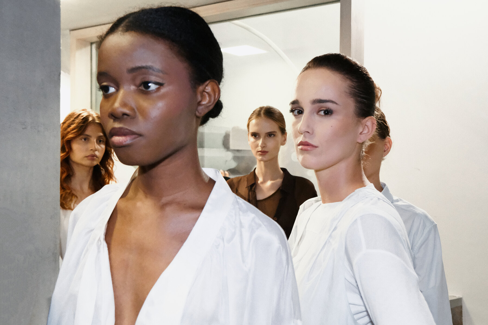
品牌介绍 / BRAND PRESENTATION
Timeless, made to live.
LAMURA · NAPOLI · 1989
LAMURA 始于 1989 年意大利那不勒斯，源自底蕴深厚的制衣家族。精湛的手工技艺、经典优质的面料，以及对日常穿着的珍视，构成品牌的根基。
Founded in Naples in 1989, LAMURA carries on the legacy of a time-honoured garment-making family. Masterful hand-craftsmanship, timeless premium fabrics and a devotion to everyday life form the heart of the brand.
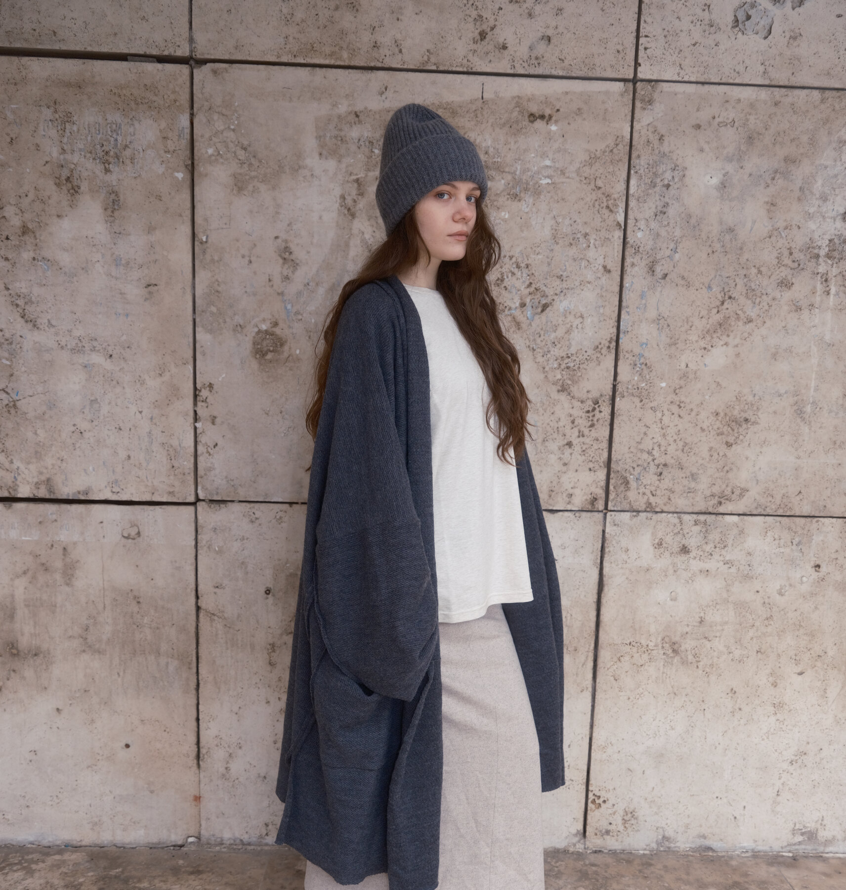
THE STORY
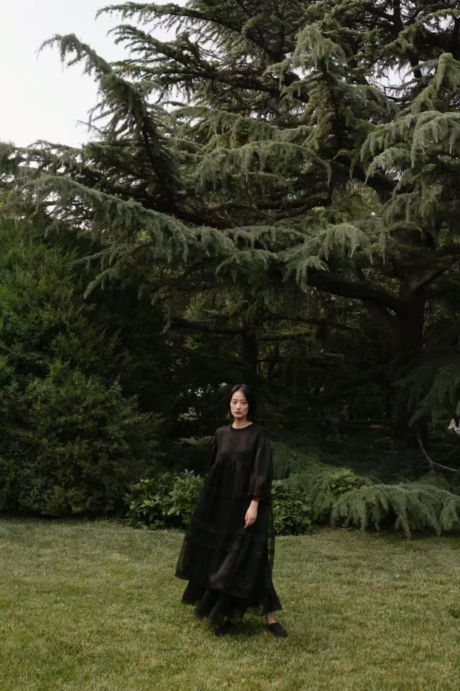
LAMURA 的故事始于一个悠久的制衣家族。品牌不以喧哗的方式存在，而是把时间交给面料，把细节交给双手，把经典交给每一位穿着者。
LAMURA began with a family tradition in making clothes. The brand lives quietly through its fabrics, its hands and the classics it creates to be worn, not just displayed.
THE MATERIAL LANGUAGE
Considered fabrics. Careful finishing. Essential silhouettes with a distinct character.
精选面料，精细收边，
让经典经得起日常。Considered fabrics. Careful finishing. Classics made to be lived in.
THE LAMURA PORTFOLIO
经典主线。以克制、优雅与耐穿的结构，构筑品牌的核心衣橱。
THE CLASSIC CORE · 经典主线高定手工坊。以精湛工艺与独特触感，承载品牌的定制精神。
HAUTE-COUTURE ATELIER · 高定手工坊休闲运动系列。以更轻盈的方式，连接城市节奏与日常生活。
CASUAL SPORT · 休闲运动复古牛仔支线。以旧日质感与自由精神，打开另一种穿衣语气。
VINTAGE DENIM · 复古牛仔“经典不必大声，
它只需要被一次次穿上。”
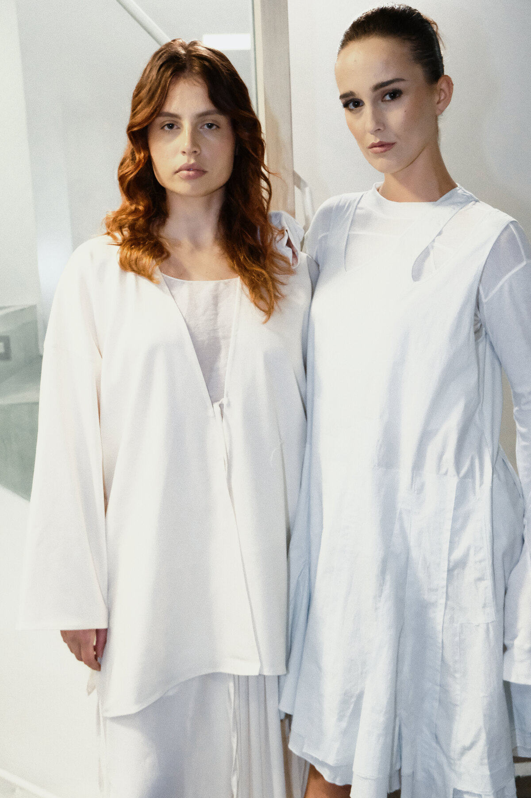
LAMURA SPRING / SUMMER 2027
Proverbs of Love / Proverbios del Amor
A POETIC NARRATIVE
本季系列由华人设计师 YANG 携侄女 ZHENYAN CC 联合主创演绎。成熟的少女告别荒芜盛夏，奔赴自由，追寻水母般的自由之心。这场温柔的寻觅之旅，最终沉淀为细腻质朴的灵感，藏于隽永古老的东方情书之中。
Helmed by Chinese designer YANG and co-created with ZHENYAN CC, SS27 follows a mature young woman leaving the desolate wilderness of midsummer behind, seeking the free-spirited heart of a jellyfish. Her search for freedom becomes a delicate inspiration, held within the timeless romance of ancient Eastern love letters.
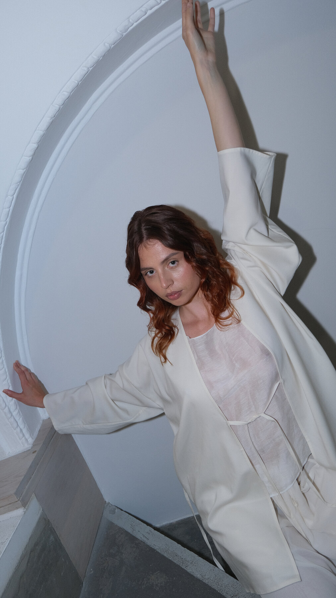
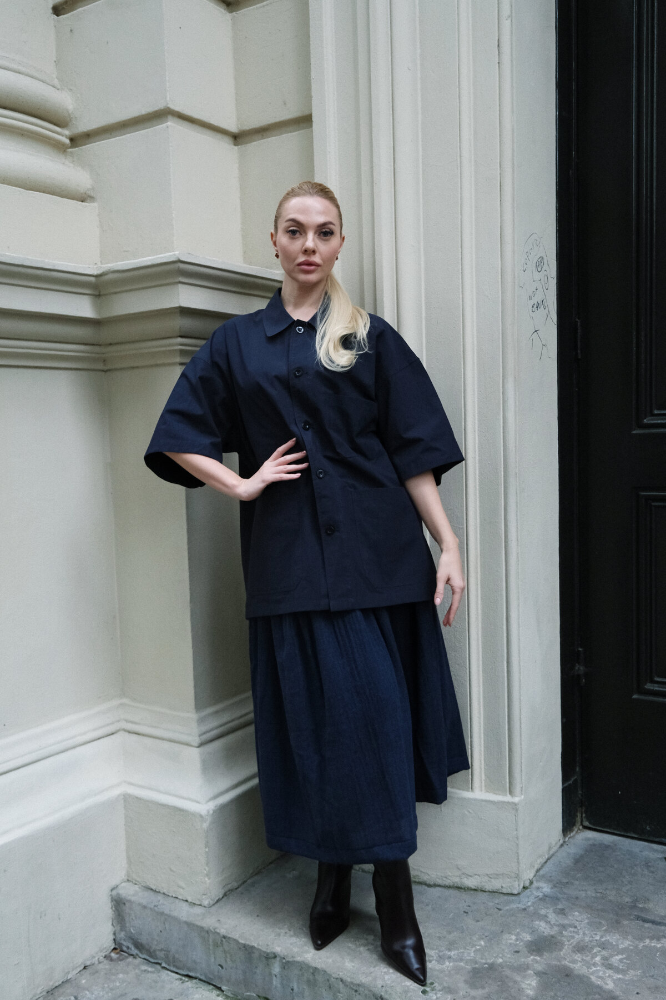
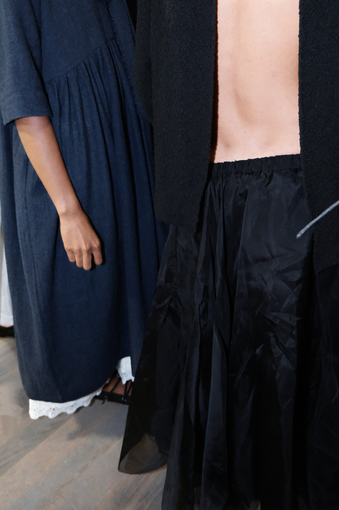
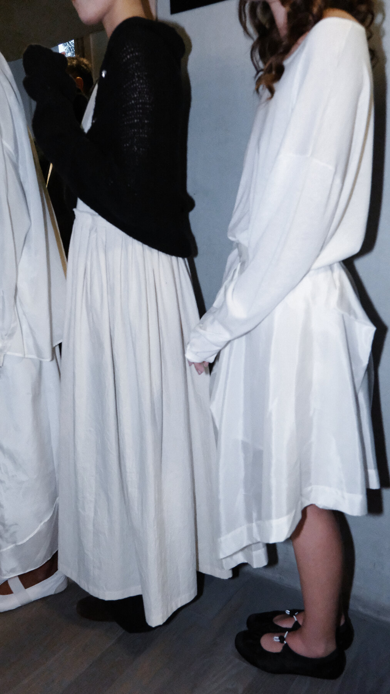
系列以简约纯粹的设计语言诠释爱与朴素。十套造型在开放体积与流动线条之间找到平衡，以黑白、轻盈的层次和细腻的触感，回应身体的自由。
Refined lines and a tender sensibility interpret love and simplicity. Ten looks balance open volumes, flowing silhouettes and delicate layers, allowing the body to move freely.
LONDON FASHION WEEK
The collection comes to life between the rhythm of footsteps and the gaze of the audience. A study in movement, presence and quiet confidence.
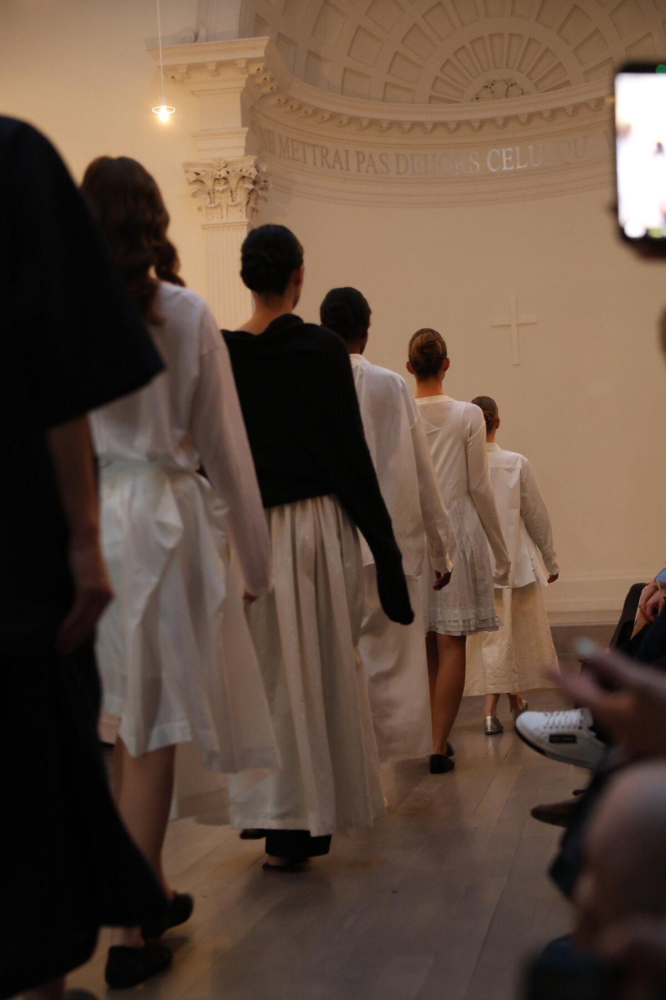
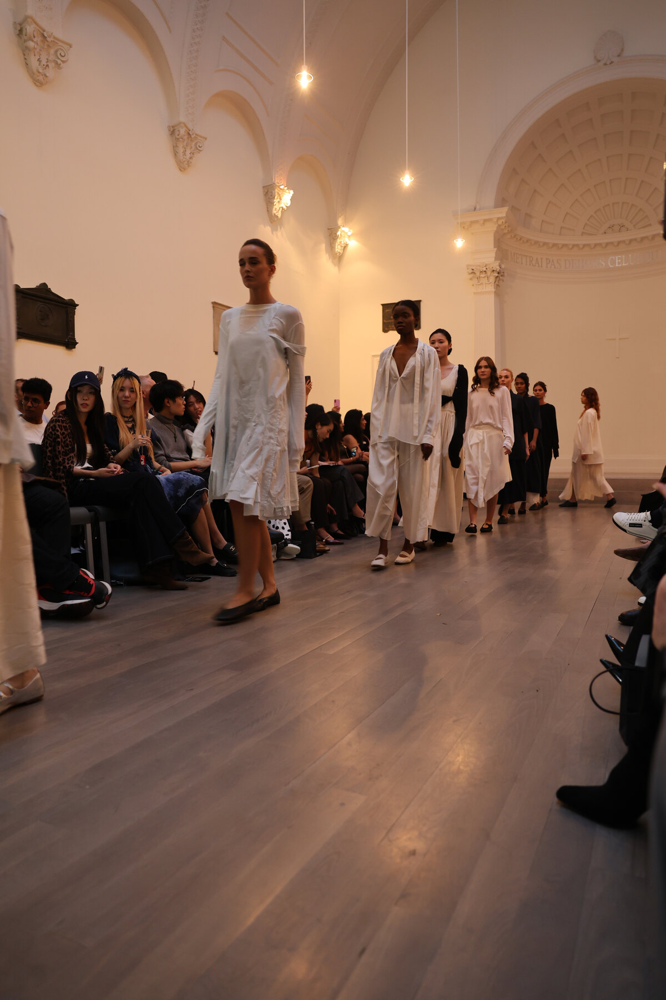
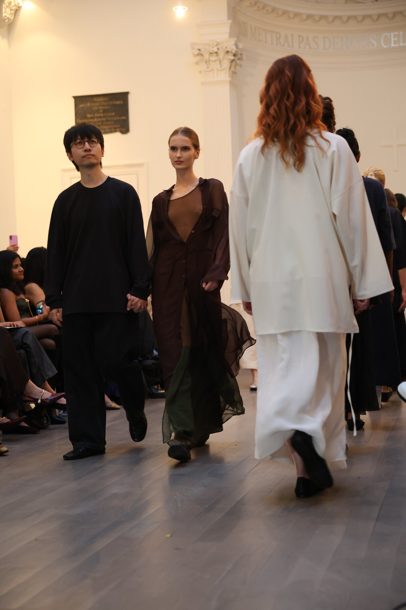
LEADING LAMURA
Chinese designer / 华人设计师
如今，LAMURA 由华人设计师 YANG 执掌。其设计将品牌源自家族制衣传统的根基，与当代人对自由、简洁和真诚的渴望连接起来。
Today, LAMURA is led by Chinese designer YANG. The designer connects the brand's roots in a family tradition of garment-making with a contemporary desire for freedom, simplicity and sincere expression.
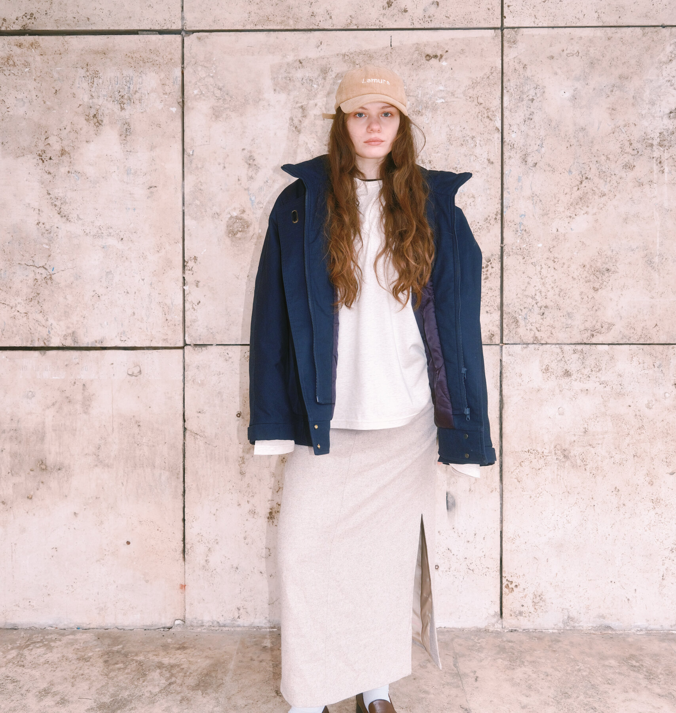
CLASSICI DA VIVERE